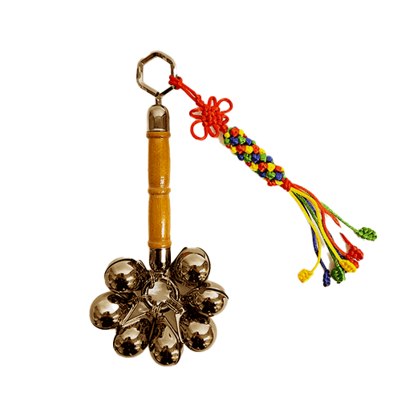
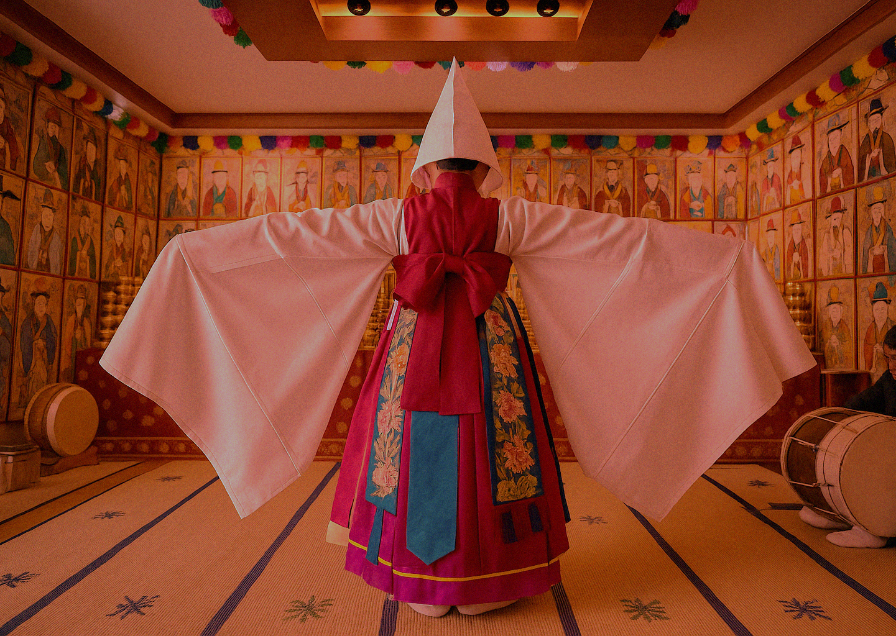

신내림이란?
신이 무당에게 내리는 현상을 일컫는 말
신내림 상태가 되면 신이 무당의 몸에 내려와서 의식(意識)을 지배하게 되는데,
탈혼(脫魂)처럼 무당의 혼이 몸을 이탈하는 것이 아니라 신이 내려서 자의식을 잃거나 의식이 변하게 된다.
완전히 자의식을 상실하는 정신이상 상태가 아니라 주변 상황에 맞추어
자신을 통제하는 반의식 상태로 간주된다.
신이 내리면 몸의 감각은 과도한 흥분상태에 들어가며, 전율하거나 발작을 일으키기도 한다.
이미지 클릭


신내림은 한국에서 매우 독특한 형태로 발전해왔다.
신내림은 한국 강신무(신이 몸에 실려 직접 신어를 말함)의 굿 의례에서 필수적인 현상으로,
무당은 신내림을 통해 초월적 세계와 현실세계를 연결해 준다.